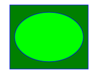

xMidYMid meet — scale 1.333, TX 16.67, TY 0
xMinYMin meet — scale 1.333, TX 0, TY 0
xMaxYMax meet — scale 1.333, TX 33.33, TY 0
none — scaleX 1.5, scaleY 1.333, TX 0, TY 0
xMidYMid slice — scale 1.5, TX 0, TY -12.5